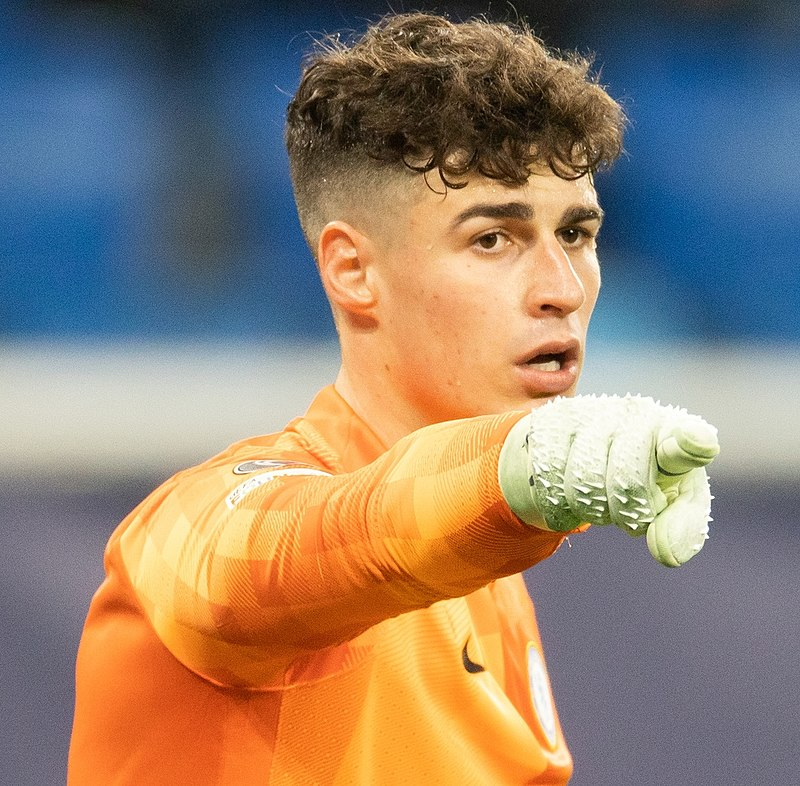

KEPA ARIZABALAGA

Kepa Arrizabalaga Revuelta adalah pemain Sepak bola profesional asal Spanyol yang Saat ini Bermain Sebagai Penjaga Gawang Untuk Klub La Liga Real Madrid, Dipinjam Dari Chelsea, Dan Timnas Spanyol.
Mengapa Anda Menjadi Kan Dia Tokoh Fav?
Karena Menurut Saya Dia Pesepakbola Yang Tampan.